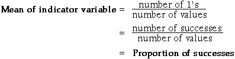

Mean and standard deviation of x and p
The mean and standard deviation are given below for the proportion of successes p , and number of successes, x = np
The fact that both x and p are approximately normally distributed in large samples is justified below.
Proportions and means
If we assign a code of '1' to the successes and '0' to the failures in the random sample, then the resulting values are called an indicator variable. Its mean is identical to the proportion of successes.

Since the proportion of successes in a sample is a kind of mean, its distribution is close to a normal distribution if the sample size is large enough.